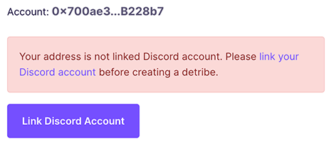
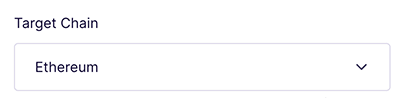
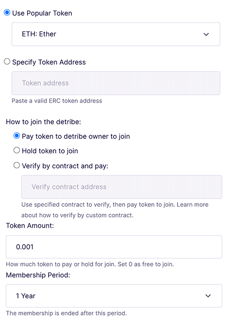
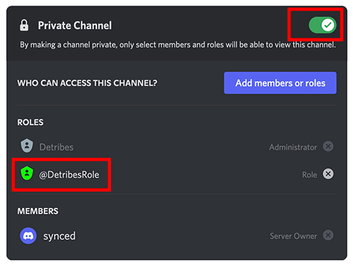

User Guide
Anyone can create a Detribe on chain and link it to his/her Discord server. Others can join the Detribe and they will be joined the Discord server automatically by the Bot.
Create Detribe
Before you create a new Detribe, make sure your account has been linked with your Discord user.

You can check the Discord user information after you linked your Discord user:
In the creation form you must select the chain that Detribe is created:

Detribes now support Ethereum, Polygon and BSC.
Then select the token for user paid or hold:

You can edit the detribe information after detribe was deployed on chain:
Link to Discord Server
In Detribe detail page you can link your detribe to Discord server by click "Add DetribesBot":
Select your Discord server and add Detribes bot as Administrator:
You can find the Discord server information after the Bot was added to your Discord server:
Go to your Discord server and edit a target channel that you want to set as members only.
Select "Permissions", set private channel on, and add @DetribesRole to ROLES:

This gives the Bot permission to invite qualified Detribe members to your Discord server automatically.